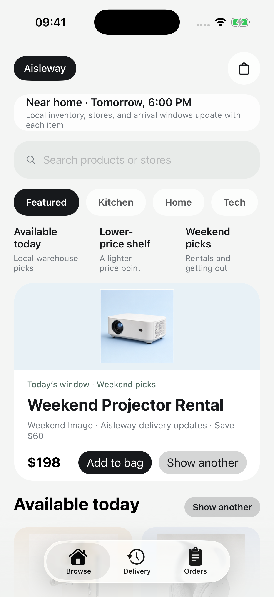
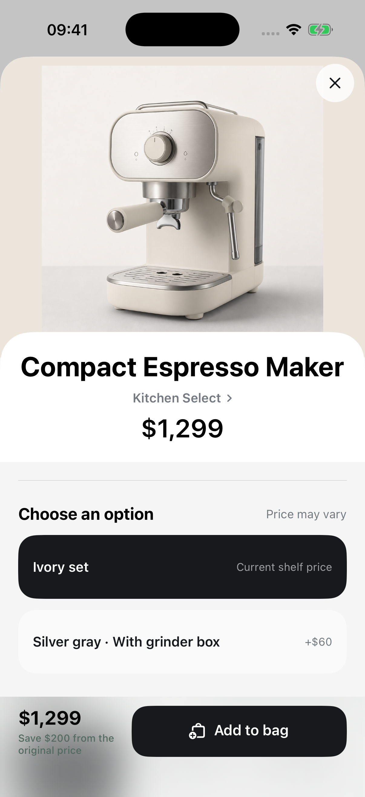
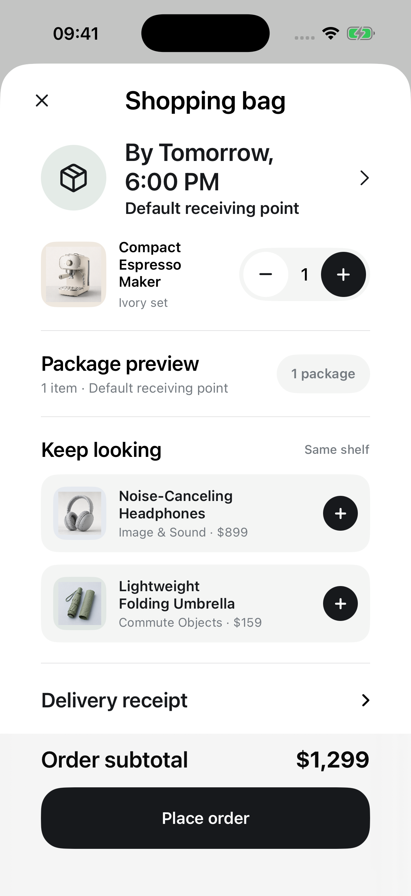
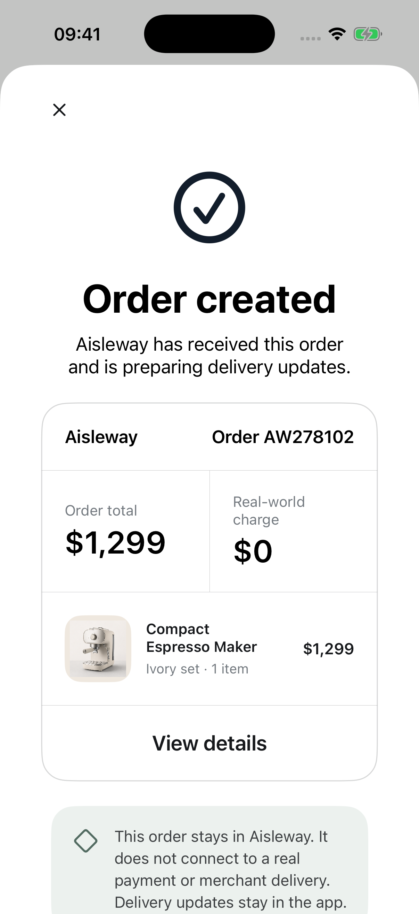
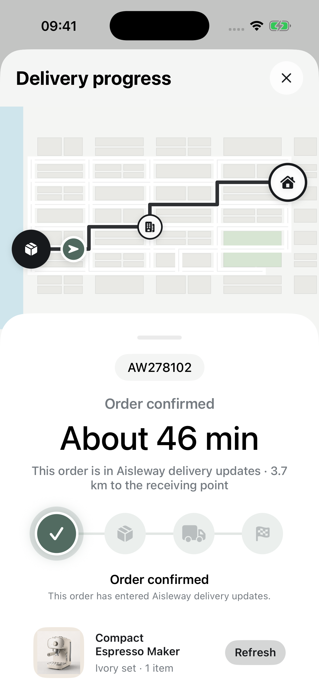
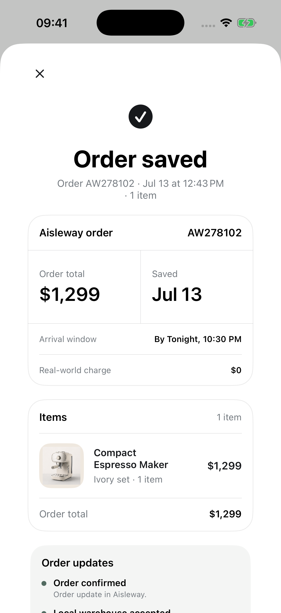

01 / PRODUCT PRINCIPLE
一个不以真实交易为目标的购物过程。A shopping process that does not aim for a real transaction.
Aisleway 是一款原生 SwiftUI 购物体验。浏览、选择、购物袋、下单、配送进度和记忆留存都发生在应用内，不产生真实付款或配送。Aisleway is a native SwiftUI shopping experience. Browsing, choosing, bag, order, delivery-like progress, and private memory all happen in-app without real payment or shipment.
02 / PRODUCT + PRIVACY DECISIONS
熟悉的流程，明确的边界。A familiar flow with explicit boundaries.
- 购物阶段使用熟悉的商业语言，不插入说教、克制或心理诊断。Commerce steps use familiar language without restraint prompts or psychological framing.
- 订单创建后明确说明付款和配送只存在于 Aisleway 内。After order creation, payment and delivery are explicitly stated as existing only inside Aisleway.
- 搜索、购物袋、订单、配送状态和记忆都保存在设备本地。Searches, bags, orders, route state, and memories stay on-device.
- 不接入真实付款、商家、快递、账户、广告或分析 SDK。No real payments, merchants, couriers, accounts, advertising, or analytics SDK.
03 / NATIVE FLOW
从发现到记忆的连续叙事。A continuous narrative from discovery to memory.






04 / EVIDENCE + CURRENT STATUS
可审查的原生产品证据。Reviewable evidence of native product craft.
技术实现Implementation
Swift + SwiftUI
商品 / 独立商品图Catalog / distinct images
112 / 93
本地单元测试Local unit tests
32 passed
英文原生评审场景English native review scenarios
12 captured
当前状态Current status
Preparing for TestFlight beta。尚未完成签名归档、App Store Connect 上传、真机完整检查或外部 TestFlight 验证。Preparing for TestFlight beta. Signed archive, App Store Connect upload, full physical-device pass, and external TestFlight validation are not yet complete.